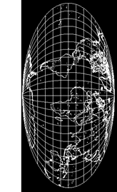

 THE BUS LEAVES US AT THE EDGE ofnowhere. The dust has hardly settled when Ali asks, "Isn't it majestic?" Not a town, not a canteen, not even a peanut vendor. Mountains in thehazy distance and across the road in the direction we came from a stretchof desolate plane. It's hard to find a delicate way to say, "Isn't WHATmajestic?" . . . so I stare ahead as if beholding the marvel,speechless.
He spins around with his arms out for all the world reminding me of atalk-show host. "Welcome to Taoist sacred ground." Ali says.
"Sorry, but the Tao is from China. Even I know that much."
"Ah! but so is this ground."
"?"
"From China."
"Get out. How was it brought? Boat? Railroad? A teaspoon at a time?"
"O, much harder than that: millimeter by millimeter, over millions of millennia."
"?!"
"This is where earth and ocean intermingled. This enormous isthmus theycall Mexico is the yin to India's yang."
Ali turns around and again faces the dull blur of mountains he callsmajesty. "We move with caution and respect, or on the way we will encounter much difficultly. Try thiswith me: find the best means to get to the tree from here."
There is just one tree, so I know what Ali is talking about. My stepstrace the shortest distance, dodging a stone or two and brushing around afew bushes. A little winded and sun-dizzy, I sit beneath the tree,grateful for the shade.
Ali in turn makes his way to the tree and me. His course is comical, acartoon character's zig-zag trajectory with a couple of serpentine loopsthrown in. Hands out and palms down before him like a campy tap-dancer,with the exaggerated tip-toe movements of a caricatured cat-burglar orcheating husband, except SWIFT. When he gets closer I see that his lipsare working, but the words he speaks are silent. Ali arrives after muchexertion without once having looked up from the ground, and stopscompletely before raising his eyes to address me. His breath is not evenaudible. "I should have been more specific, Sunshine. I meant respectand caution for the earth, not so much for yourself. Look before youstep. When you walk, let the earth be your guide to make the leastimpact possible on her fragile back. . . . We'll camp in the foothillstonight, tomorrow start our climb."
This night, my first night at the edge of the holy land, I think Iunderstand the concept of the firmament. When forefathers and 'mothersbeheld the ceiling of stars they saw it stretch all the way to thehorizon, without the interference of city lights or sullen skyscrapers. It's like a dome, and I blink and yet still when I open my eyes therethey are: glimmers on the horizon as bright as the polestar. If I hiketo where the sun was swallowed up I'll arrive at them eventually. ButAli has designs on the other direction: to the place where the ancestorslay and, long before the Brotherhoodwas one, the first fruits of ourmagic acid were synthesized by the sun and soil. There is little moonto speak of, already following the doomed course of the sun. The dark mountains of the Sierra MadreOccidental, edges mostly legible as the abrupt absence of stars, loombefore us in forbidding ranks.